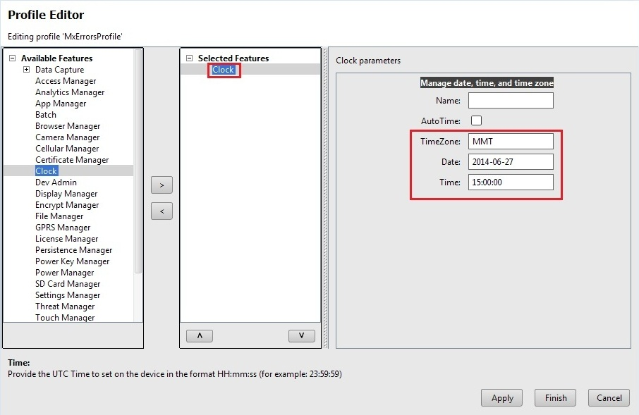
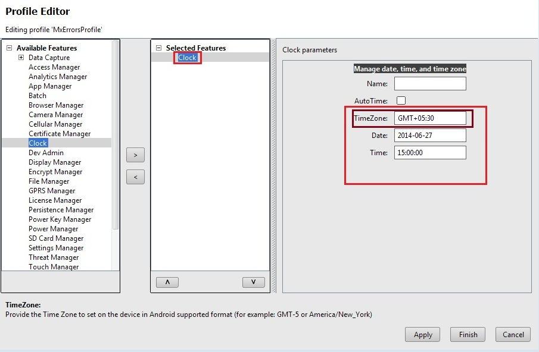

Overview
This guide will walk you through creating an EMDK For Android application that will analyze MX errors that we get while using MX features that are declared in Profile creation. These MX errors may occur due to some invalid input while creating a profile or some incorrect device configuration.
In this tutorial we would be deliberately producing errors by providing invalid inputs in some of the MX features while profile creation, just to see the errors using getStatusDocument or getStatusString of EMDKResults. We would obtain the error description by parsing the resulting XML response and compare the output with the usual working case.
The goal here is to make you understand how to find errors and correct them if there are any.
Creating The Project
Note: Provide "MxErrorsTutorial" as the project name for this tutorial.
Start by creating a new Android Studio project.
Adding the MX Errors Profile that includes Clock feature
Click here to see how to add a specific feature to the Profile Manager.
Provide "MxErrorsProfile" as the Profile Name for this tutorial.
Note: You can provide any Profile Name but make sure to access it with the similar name in the Android code.
Now, you can see all these MX features on the left hand side of the Profile Editor window. Select "Clock" feature from the list and click "Right Arrow". The parameter list will be populated.

Using this feature, we will configure the device clock. But we will provide incorrect values while setting Clock parameters and in the code we will parse the XML response and display the result in a dialog.
Enter the Clock parameters such as Timezone, Date and Time. The parameters need to be in a certain format mentioned in the wizard for each field. But we will enter incorrect value in the "Timezone" field (For Example "MMT" which is not a valid TimeZone) and proceed.
Note: Keep the "Name" field empty and AutoTime field unchecked.

Click Apply and Finish.

Click "Close".
Note:
Now the "EMDKConfig.xml" is created under "\assets" folder. This file will contain a definition of all of your profiles that you create.
You can inspect the "EMDKConfig.xml" under "\assets" folder to see it is reflecting the changes made to the parameters via EMDK Profile Manager GUI earlier. However, it is advised that this file not be manually updated and only be controlled via the Profile Manager. An entry of "Clock" feature is created in EMDKConfig.xml file with the attributes that we had set while profile creation.

Enabling Android Permissions
Modify the Application's Manifest.xml to use the EMDK library and to set permission for the EMDK.

You must first enable permissions for 'com.symbol.emdk.permission.EMDK':
<uses-permission android:name="com.symbol.emdk.permission.EMDK"/>Then you must enable the library:
<uses-library android:name="com.symbol.emdk"/>When done, your manifest.xml should look like:

Adding Some Code
Now we will start to add some code.
First you must add references to the libraries:
import com.symbol.emdk.*; import com.symbol.emdk.EMDKManager.EMDKListener; import android.widget.Toast;Then you must extend the activity to implement EMDKListener.
public class MainActivity extends Activity implements EMDKListener {
}.. .. .. .. .. .. ... @Override public void onClosed() { // TODO Auto-generated method stub } @Override public void onOpened(EMDKManager emdkManager) { // TODO Auto-generated method stub }We will now create some global variables to hold the profile name as well as instance objects of EMDKManager and ProfileManager with a status variable while applying the profile. Some of the variables are used to hold the name, type and description in case of any errors. These variables would be used throughout the code.
Note: Verify the Profile name in the code with the one created in the Profile Manager. They both should be identical.
//Assign the profile name used in EMDKConfig.xml private String profileName = "MxErrorsProfile"; //Declare a variable to store ProfileManager object private ProfileManager profileManager = null; //Declare a variable to store EMDKManager object private EMDKManager emdkManager = null; // Contains the parm-error name (sub-feature that has error) private String errorName = ""; // Contains the characteristic-error type (Root feature that has error) private String errorType = ""; // contains the error description for parm or characteristic error. private String errorDescription = ""; // contains status of the profile operation private String status = "";In the onCreate method, we call getEMDKManager so that the EMDK can be initialized and checked to see if it is ready.
//The EMDKManager object will be created and returned in the callback. EMDKResults results = EMDKManager.getEMDKManager(getApplicationContext(), this); //Check the return status of getEMDKManager if (results.statusCode == EMDKResults.STATUS_CODE.SUCCESS) {
} else {// EMDKManager object creation success
}// EMDKManager object creation failedSo far your code should look like:

Now we need to use the
onOpenedmethod to get a reference to the EMDKManager. The EMDKListener interface will trigger this event when the EMDK is ready to be used. This must be implemented in order to get a reference to the EMDKManager APIs. This event will pass the EMDKManager instance and we assign it to the global variableemdkManagerthat we created in the previous steps. We then use that instance object to get an instance of ProfileManager and assign it to the global variableprofileManager. This is how we will interface with the APIs in the rest of the code:Note: Set the name of the method argument to
emdkManagerthis.emdkManager = emdkManager; // Get the ProfileManager object to process the profiles profileManager = (ProfileManager) emdkManager .getInstance(EMDKManager.FEATURE_TYPE.PROFILE);Now that we have a reference to ProfleManager, we use it to install and activate the profile we built earlier using the
processProfilemethod. We could have also performed this action at a different time, say when someone pressed a button, but we chose to do it as soon as the EMDK was ready:if (profileManager != null) { String[] modifyData = new String[1];
}// Call processPrfoile with profile name and SET flag to create the profile. The modifyData can be null. EMDKResults results = profileManager.processProfile(profileName, ProfileManager.PROFILE_FLAG.SET, modifyData); if (results.statusCode == EMDKResults.STATUS_CODE.CHECK_XML) { } else { // Show dialog of Failure AlertDialog.Builder builder = new AlertDialog.Builder(this); builder.setTitle("Failure"); builder.setMessage("Failed to apply profile...") .setPositiveButton("OK", new DialogInterface.OnClickListener() { public void onClick (DialogInterface dialog, int id) { } }); AlertDialog alert = builder.create(); alert.show(); }This
processProfilemethod returns the result of applying a particular profile that we set using EMDK Profile Wizard in EMDKResults reference. If the profile is successfully processed, it retuns the status asCHECK_XMLand then we go on and parse the response to get further details whether the profile was applied successfully or not. Otherwise we display a Failure message in a dialog.Note: 1. There is a difference between processing a profile successfully and applying a profile successfully.
Note: 2. If the status is other than
CHECK_XML, we are simply displaying a failure message. You can actually go ahead and check different types of status and display the appropriate message accordingly, which is not in the scope of this sample tutorial.In case of
CHECK_XMLstatus, We retrieve XML response string from the result usinggetStatusStringmethod.// Get XML response as a String String statusXMLResponse = results.getStatusString();Further, we would parse this XML response string using XML Pull Parser in order to get the status and error parameters if any. XML Pull Parser is an interface that defines parsing functionality provided in XMLPULL V1 API (visit this website to learn more about API and its implementations). In the parsing we would be looking for specific status tags (Error Name, Error Type and Error Description) in case of any errors and if found, we would get those values in the respective global variables that we have declared in previous step.
try { // Create instance of XML Pull Parser to parse the response XmlPullParser parser = Xml.newPullParser(); // Provide the string response to the String Reader that reads // for the parser parser.setInput(new StringReader(statusXMLResponse)); // Call method to parse the response parseXML(parser); } catch (XmlPullParserException e) { e.printStackTrace(); }Note: Here we have called the method
parseXMLto parse XML response string. We will declare the method in the next step.Once the response is parsed, we would display the result of applying this profile in a dialog by calling
displayResultsmethod, which we would declare in coming steps.// Method call to display results in a dialog displayResults();Your complete
onOpenedmethod should now look like:

You will see few errors as we have not declared the respective methods to parse the response and display result. Lets do it one by one. In this step, we will create a method
parseXMLthat uses XML Pull Parser to parse the XML string response and set the status and error parameters if any.In the reponse, we are supposed to capture
nameanddescforparm-errortag,typeanddescforcharacteristic-errortag in case of any errors.// Method to parse the XML response using XML Pull Parser public void parseXML(XmlPullParser myParser) { int event; try { event = myParser.getEventType(); while (event != XmlPullParser.END_DOCUMENT) { String name = myParser.getName(); switch (event) { case XmlPullParser.START_TAG: // Get Status, error name and description in case of // parm-error if (name.equals("parm-error")) { status = "Failure"; errorName = myParser.getAttributeValue(null, "name"); errorDescription = myParser.getAttributeValue(null, "desc");
}// Get Status, error type and description in case of // parm-error } else if (name.equals("characteristic-error")) { status = "Failure"; errorType = myParser.getAttributeValue(null, "type"); errorDescription = myParser.getAttributeValue(null, "desc"); } break; case XmlPullParser.END_TAG: break; } event = myParser.next(); } } catch (Exception e) { e.printStackTrace(); }Your complete
parseXMLmethod should now look like:
You will still see one error as we need to declare
displayResultsmethod to display the result of profile operation in a dialog. Before displaying the results, we should form the content of the result to be shown first, specifically in case of errors. This could be done by creatingbuildFailureMessagemethod.In this method, the error message in case of error is formed using following way:
- Name and description of error if the response contains
parm-error. - Type and description of error if the response contains
characteristic-error. - Name, type and description of error if the response contains both
parm-errorandcharacteristic-error.
The
buildFailureMessagemethod would have following code to match the above mentioned criteria.// Method to build failure message that contains name, type and // description of respective error (parm, characteristic or both) public String buildFailureMessage() { String failureMessage = ""; if (!TextUtils.isEmpty(errorName) && !TextUtils.isEmpty(errorType)) failureMessage = errorName + " :" + "\n" + errorType + " :" + "\n" + errorDescription; else if (!TextUtils.isEmpty(errorName)) failureMessage = errorName + " :" + "\n" + errorDescription; else failureMessage = errorType + " :" + "\n" + errorDescription; return failureMessage; }buildFailureMessagemethod should look like:
- Name and description of error if the response contains
In this step, we will add
displayResultsmethod to display the result of profile operation in a dialog. The dialog would display status asSuccessorFailurewith corresponding message based on the response of profile operation.// Method to display results (Status, Error Name, Error Type, Error // Description) in a // dialog public void displayResults() { // Alert Dialog to display the status of the Profile creation // operation of MX features AlertDialog.Builder alertDialogBuilder = new AlertDialog.Builder( MainActivity.this); if (TextUtils.isEmpty(errorDescription)) { alertDialogBuilder.setTitle("Success"); alertDialogBuilder.setMessage("Profile Successfully Applied..."); } else { // set title alertDialogBuilder.setTitle(status); // call buildFailureMessage() method to set failure message in // dialog alertDialogBuilder.setMessage(buildFailureMessage()); } alertDialogBuilder.setCancelable(false).setPositiveButton("OK", new DialogInterface.OnClickListener() { public void onClick(DialogInterface dialog, int id) { } }); // create alert dialog AlertDialog alertDialog = alertDialogBuilder.create(); // show it alertDialog.show(); }The method
displayResultsshould look like:
You can see that all the errors are gone.
Now let's override the
onDestroymethod so we can release the EMDKManager resources:@Override protected void onDestroy() { // TODO Auto-generated method stub super.onDestroy(); //Clean up the objects created by EMDK manager emdkManager.release(); }Your onDestroy method should now look like this:

That's it!!! We are done with all the coding and incorrect configuration. Now let us run the application and we should get the error in a dialog.
Running the Application
Connect the device to a USB port (device must have USB debugging enabled).
Note:
Make sure the device is in USB debug.Run the application.
We get the following XML response as a return of
results.getStatusString()in theonOpenedmethod, which was saved in astatusXMLResponseString.<?xml version="1.0" encoding="UTF-8"?> <wap-provisioningdoc> <characteristic type="status"> <parm name="code" value="6"/> <parm name="description" value="Review the XML for details"/> </characteristic> <characteristic type="Clock" version="4.2"> <parm name="AutoTime" value="false"/> <parm-error name="TimeZone" value="MMT" desc="Invalid TimeZone"/> <parm name="Date" value="2014-16-27"/> <parm name="Time" value="15:00:00"/> </characteristic> </wap-provisioningdoc>Since the response contains
<parm-error>tag, the EMDK fails to set the clock. This is because we had set an incorrect value for "TimeZone" field ("MMT" instead of something like "GMT+05:30"). So when we parsed the response we looked for thisparm-errortag and parsednameanddescfields of this error tag. Finally we displayed these field in an Alert Dialog to the user.
Now let's correct the parameters and get the valid output that can change the clock settings with the parameters that we declared during profile creation.
So first we will go to profile manager and edit it with the valid "TimeZone" value ("GMT+05:30" instead of "MMT").

Click "Apply", "Finish" and then "Close".
Run the application again.
Now since we provided valid inputs, we get a valid XML response without errors.
<?xml version="1.0" encoding="UTF-8"?> <wap-provisioningdoc> <characteristic type="status"> <parm name="code" value="6"/> <parm name="description" value="Review the XML for details"/> </characteristic> <characteristic type="Clock" version="4.2"> <parm name="AutoTime" value="false"/> <parm name="TimeZone" value="GMT+05:30"/> <parm name="Date" value="2014-16-27"/> <parm name="Time" value="15:00:00"/> </characteristic> </wap-provisioningdoc>As you can see its a valid XML response since it does not contain any
<characteristic-error>or<parm-error>tag. Moreover, the clock parameters that we set during profile creation are also applied successfully to the device.
In such a way, you can use EMDKResults API with its methods to identify any kind of errors in all the MX features that you used while profile creation. This helps in debugging your application to figure out invalid parameters.
Important Programming Tips
It is required to do the following changes in the application's AndroidManifest.xml:
Note:
- Include the permission for EMDK:
<uses-permission android:name="com.symbol.emdk.permission.EMDK"/>Note:
- Use the EMDK library:
<uses-library android:name="com.symbol.emdk"/>